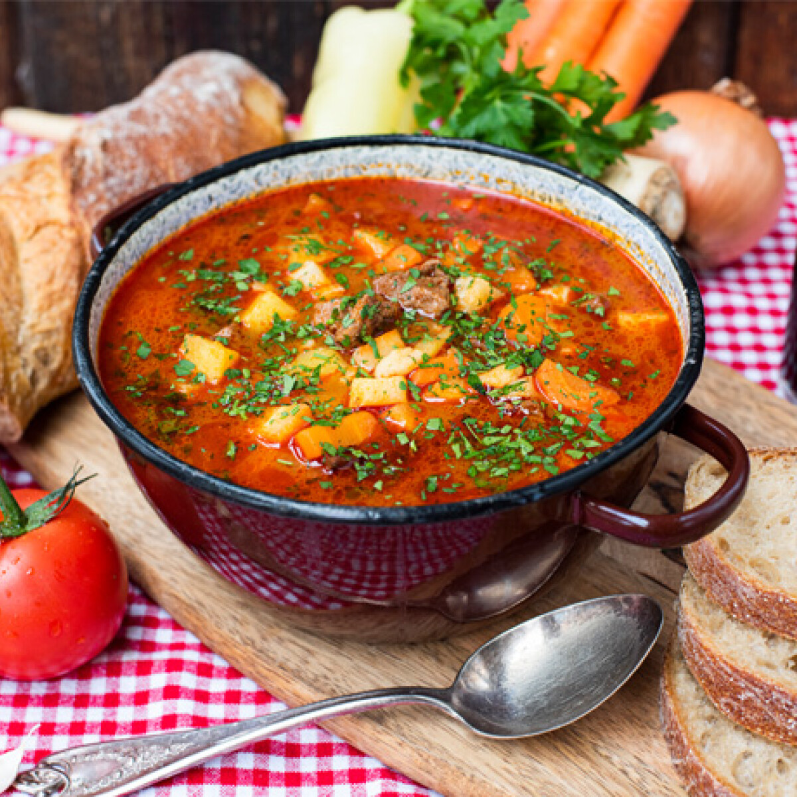

Gulyásleves
Miért ez a kedvencem?
A gulyásleves az egyik kedvenc ételem, mert tökéletesen egyesíti a hagyományos magyar ízeket. A gazdag, fűszeres leves a sok hús és zöldség miatt nemcsak laktató, de ízletes is. Gyerekkorom óta emlékeztet a családi összejövetelekre, ahol mindig hatalmas bográcsban főztük, és mindenki jóízűen fogyasztotta.
Na de mi is ez valójában?
A gulyásleves egy tradicionális magyar étel, amely eredetileg a pásztorok egyszerű, tűz fölött főzött étele volt. Alapját a marhahús, burgonya és fűszerpaprika adja, amit gyakran hagymával, répával és köménnyel ízesítenek. Laktató, gazdag leves, amelyet gyakran friss kenyérrel fogyasztanak.

Készítsük el!
Hozzávalók
- 1,5kg marhalábszár (comb, fartő vagy pofa)
- 2 fej vöröshagyma
- 2 ek mangalica vagy libazsír
- 3 teáskanál
- só ízlés szerint
- 2kávéskanál őrölt kömény
- 2gerezd fokhagyma
- 2dkg pasztinák
- 6 db sárgarépa
- 4db burgonya
- 4 liter víz (kb.)
Hogyan?
- A húst mossuk, hártyázzuk, kisebb kockákba vágjuk. A zöldségeket mossuk, pucoljuk. A fokhagymát áttörjük. A hagymát apró kockába vágjuk, a répákat, és a burgonyát kisebb, nagyjából egyforma kockákba vágjuk.
- Egy nagy lábasba kb. 7-8 literesbe, közepes lángon felolvasztunk 2 nagy evőkanál mangalicazsírt. Rádobjuk a hagymát és megpároljuk. Menet közben hozzáadjuk a fokhagymát is. Nem elég üvegesre párolni, pici színt is kelljen kapnia az alapnak, hogy még több ízt tudjon majd a leveshez adni.
- Adjuk hozzá a húst és a húspirítás végén fűszerezzünk: először a fűszerpaprikát szórjuk a lábasba, amivel jól forgassuk össze a húst, aztán mehet a babérlevél és a kömény is hozzá, öntsük fel kevés vízzel, majd sózzuk és borsozzuk utána.
- Így hagyjuk főni a húst puhulásig, néha keverjük át.
- Ha megpuhult a hús, a burgonya kivételével mehet az összes zöldség a levesbe. Ekkor öntsük fel még úgy 4 liter vízzel az egészet, hogy jól lepje el. Most egy kicsit feljebb vehetjük a lángot.
- Forrás után 5-6 perc múlva, amikor a zöldség még csak félig puha, adjuk hozzá a burgonyát és a csipetkét. Keverjük néha át, ne ragadjon le a tészta. Ha feljött az összes a víz tetejére, és a burgonya is megpuhult, akkor húzzuk le a tűzről a lábast. Ellenőrizzük az ízeket.
- Tálaljuk tányérokba a levest, szórjuk meg aprított petrezselyemmel. Tegyünk az asztalra frissen szelt házi kenyeret, zöld, hegyes erős paprikát, Erős Pistát vagy szárított csípős fűszerpaprikát az erősebb ízek kedvelőinek.